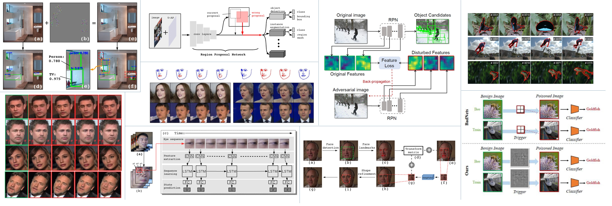
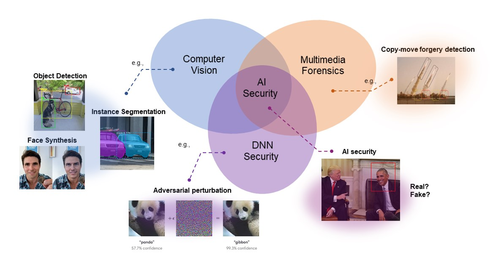

Welcome to AISec Group!

AI Security Group (AISec) is under the institute of Artificial Intelligence, Ocean University of China, led by Prof. Junyu Dong and Dr. Yuezun Li. The research interest of our group mainly lies in computer vision, DNN security and multimedia forensics. We currently focus on fighting against the newly raised security threats introduced by advanced Artificial Intelligence (AI) technologies, such as falsified multimedia, the vulnerability of DNN models, etc.

We are looking for M.S. students to work on AI security and computer vision. Please drop us an email if you are interested.
Detection-by-Simulation: Exposing DeepFake via Simulating Forgery using Face Reconstruction.
Toward the Creation and Obstruction of DeepFakes.
© AI Security Group (AISec) @ OUC 2022